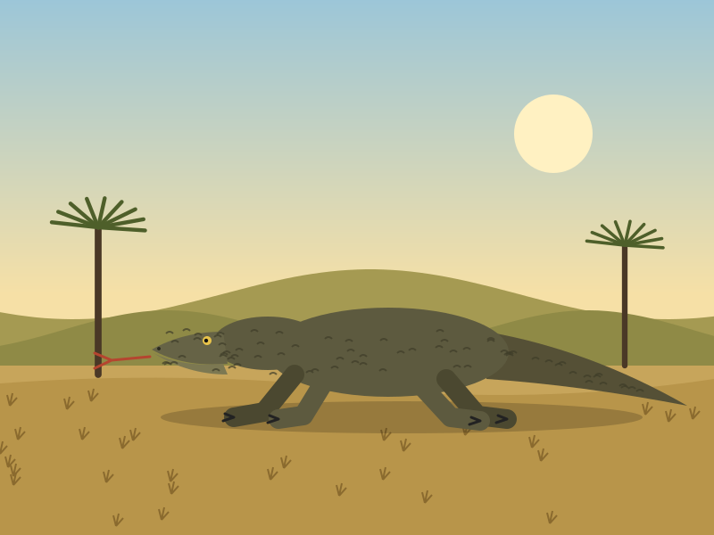
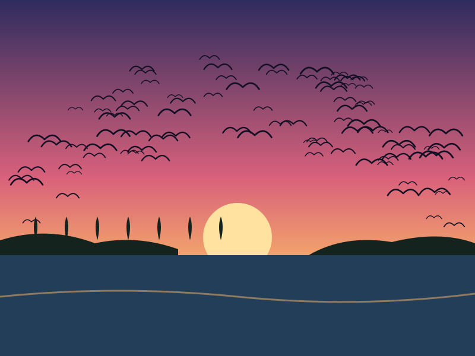
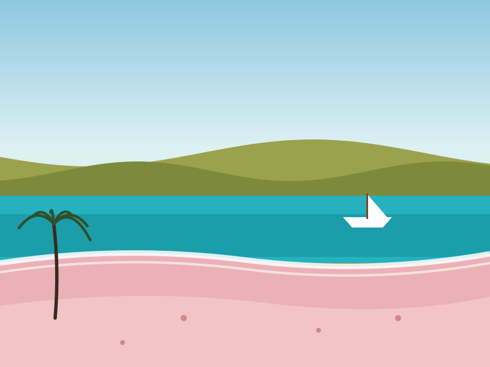
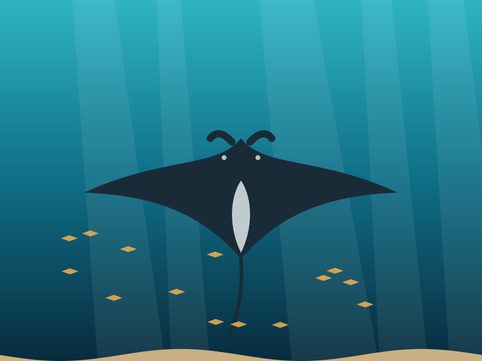
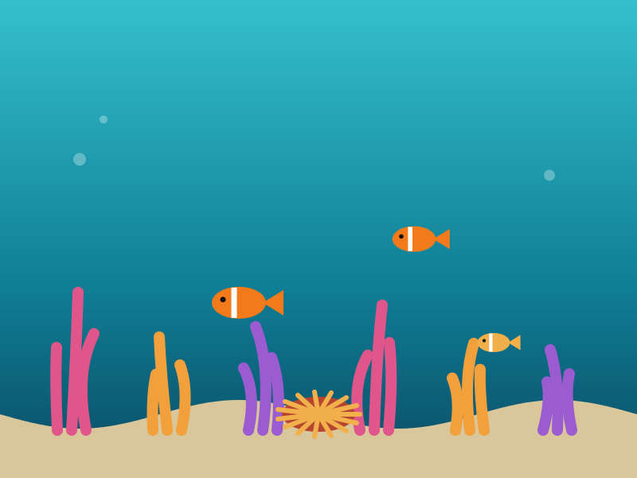
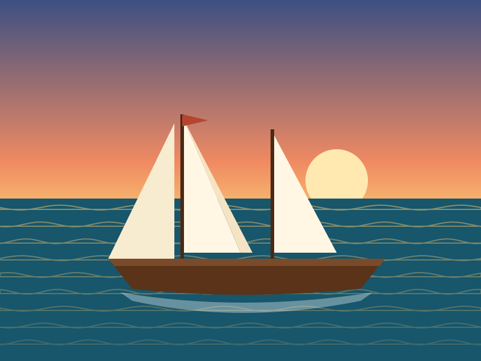
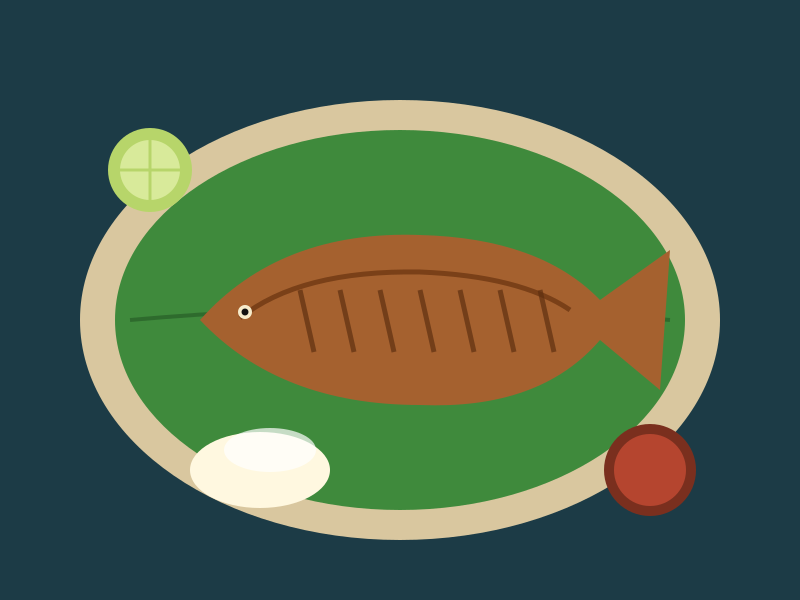

Galeri Komodo Island
Delapan pemandangan dari darat, laut, dan kapal.
Satwa
-

Komodo di savanaTerlihat paling aktif pada pagi hari. -

Kalong di Pulau KalongRibuan kelelawar buah keluar dari bakau saat matahari terbenam.
Bentang alam
-
Senja di Pulau PadarBukit savana berubah keemasan menjelang malam. -

Pantai PinkWarna pasir berasal dari serpihan karang merah.
Bawah laut
-

Pari mantaSering terlihat di Manta Point saat arus membawa plankton. -

Terumbu karangIkan badut berlindung di antara anemon laut.
Pelayaran dan kuliner
-

Kapal phinisiKapal kayu tradisional Sulawesi yang kini menjadi kapal wisata. -

Ikan bakar Labuan BajoHasil tangkapan hari itu, disajikan dengan sambal.
Ingin melihat langsung? Lihat paket perjalanan.